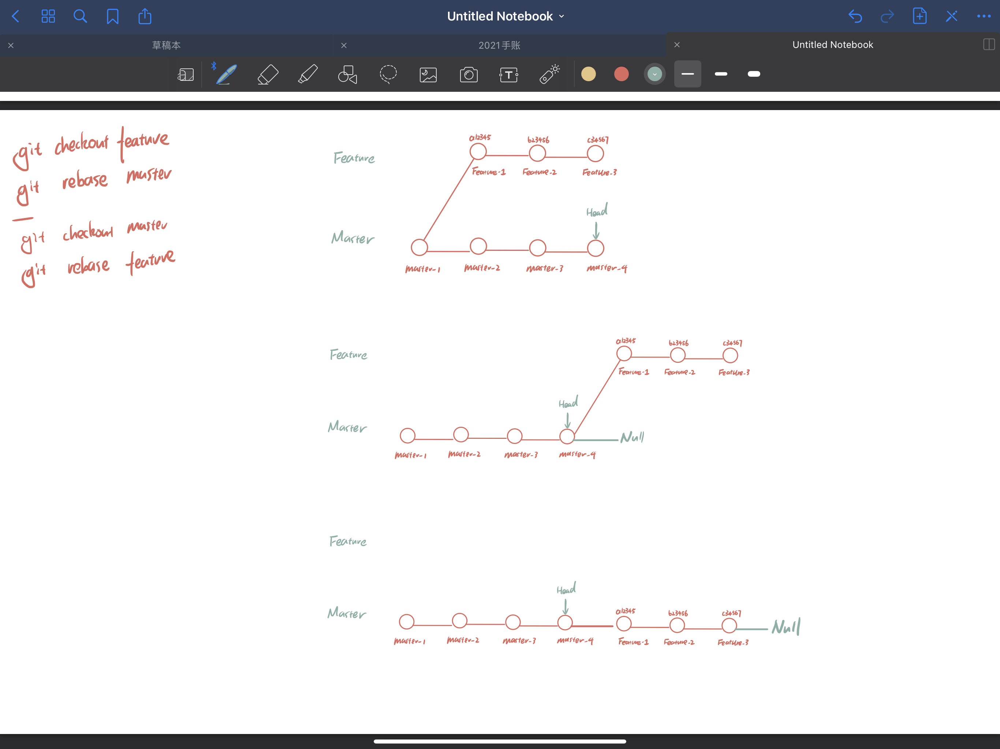
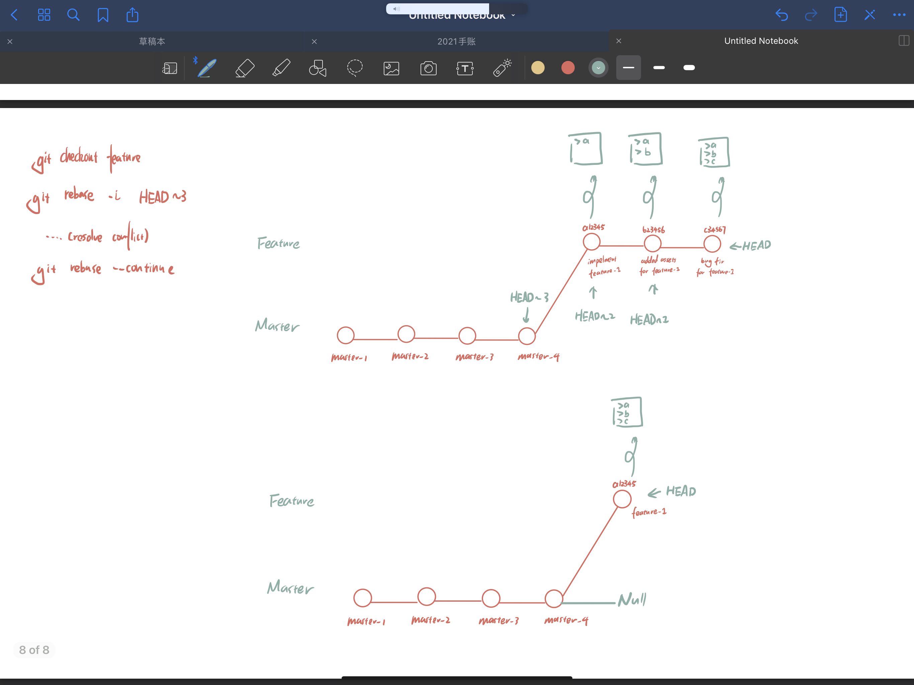

If you are not familiar with all these terminologies, please look it up by yourself. Create an empty Git repository or reinitialise an existing one
将创建一个名为 .git 的子目录,这个子目录含有你初始化的 Git 仓库中所有的必须文件,这些文件是 Git 仓库的骨干
> git initAdding a remote repository that you can push to
添加可以上传的远端，这里的远端使用别名origin
> git remote add origin git@github.com:loaheb/test-git.git
> git remote -v
origin git@github.com:loaheb/test-git.git (fetch)
origin git@github.com:loaheb/test-git.git (push)Adding files to the stage (or index)
添加文件到暂存区
> git add . # Add all files in working dir to stage
> git add filename.txt # Add file filename.txt to stage
Illustration:
Adding a new commit that is attacking to the commit item where the HEAD is pointing to (at the local repo)
在本地仓库中，HEAD指针指向的commit快照后添加一个新的快照
> git commit -m "Example Message"
> git commit
Example Message
# Please input commit message......
# XXXXXXXXXXXXXXXXXXXXXXXXXXXXXXXXX
# XXXXXXXXXXXXXXXXXXXXXXXXXXXXXXXXX
:wqIllustration:
Reset to an earlier state of commit, by discarding all the commit item done after it (if you don't with to keep code use --hard option, otherwise use --soft)
撤销到指定的版本，删除该版本之后的所有commit (git reset是直接删除指定的commit, 是把HEAD向后移动了一下)
> git reset --hard HEAD^ # 回到最新的一次提交
> git reset --soft HEAD^ # 此时代码保留，回到 git add 之前
> git reset HEAD^ # == "git reset --soft HEAD^"
> git reset --hard <commit_id> #Reset to ceertain commit
Illustration:
Revert to an earlier state of commit, by keeping all the commit item done after it, but to add another commit that has the same content of the commit you are reverting to.
撤销指定的版本, 保留该版本之后的所有commit，撤销会作为一次新的commit进行保存 (git revert是用一次新的commit来回滚之前的commit, 是HEAD继续前进，只是新的commit的内容和要revert的内容正好相反，能够抵消要被revert的内容)
> git revert
> git revert HEAD # 撤销前一次 commit
> git revert HEAD^ # 撤销前前一次 commit
Illustration:
Used to transfer or push the commit, which is made on a local branch in your computer to a remote repository like GitHub.(By default the git will push the local master branch to the remote master branch )
用于从将本地的分支版本上传到远程并合并
(默认如果不指定要push哪个branch到哪个remote远端Git服务器。Git会默认push本地的master branch到别名为origin的远端。)
> git push
> git push origin master
> git push origin master:master
> git push 'remote_alias' 'local_branch_name' #若分支名字相同
> git push 'remote_alias' 'local_branch_name':'remote_branch_n'Illustration: 
Get the update from the remote repo to local repo without doing any changes (merge / rebase) to the branches.
> git fetch
remote: Counting objects: 3, done.
remote: Compressing objects: 100% (3/3), done.
remote: Total 3 (delta 0), reused 0 (delta 0), pack-reused 0
Unpacking objects: 100% (3/3), done.
From https://github.com/jaredRenCode/gitignoreTest
8f37824.5d77c90 master -> origin/master
> git fetch --all # fetch all registered remote
> git fetch 'remote_alias' # # fetch all branch from a remote
> git fetch 'remote_alias' 'branch_name' # specific branch & remote
Illustration:
Run two command at once: fetch then merge (not safe)
Git Fetch的基础上做合并分支操作
> git push # git fetch + git
Updating 8f37824..5d77c90
Fast-forward
README. md I 7 +++++++
1 file changed, 7 insertions(+)
create mode 100644 README.md
> git push --rebase #use rebase instead of merge
Illustration:
delete branch on remote machine
删除主机的分支，以下命令表示删除 origin 主机的 master 分支
> git push origin --delete mastershow branch on remote machine
查看所有的远程分支
> git branch -r
# origin/master
# origin/featurel
# origin/debug2
# remote-repo/master
# remote-repo/other-feature
Add new branch & move to branch (Note: when you change branch, git will replace the content with last commit in this branch)
当你切换分支的时候，Git 会用该分支的最后提交的快照替换你的工作目录的内容
> git branch 'branch_name' # create branch
> git checkout 'branch_name' # checkout branch
Switched to branch 'branch_name'.
> git checkout -b 'branch_name' # 创建新分支并立即切换到该分支下
Switched to branch 'branch_name'.Show all branch
列出分支（列出本地分支）
> git branch
master
* feature
developing
testing
> ls ./.git/refs/heads/Delete branch (Note: need merge before deleting)
删除分支
> git branch -d 'branchname'
> git branch -delete 'branchname'
Deleted branch 'branchname' (was fd98ba2).
> git branch --force -d 'branchname' #Force delete (or -D)
Deleted branch 'branchname' (was fd98ba2).Rename branch
重命名分支
> git branch -m 'OLD-BRANCH-' 'NEW-BRANCH-NAME'
> git branch -move 'OLD-BRANCH-NAME' 'NEW-BRANCH-NAME'used to compare the difference between two branches' last commitment
用于对比两个branch最后一次快照的区别
> git diff 'FIRST-BRANCH'..'SECOND-BRANCH'
diff --git a/master.txt b/master.txt
index 27efcb2..438c892 100644
--- a/master.txt
+++ b/master.txt
@@ -1,5 +1,6 @@
1
2
3
+
conflict-2
-conflict-4
+conflict-4
\ No newline at end of file
(END)Combine one branch to another, by resolving all the commit conflicts at once (all the commits within the merging branch will be considered as one merge conflict that needs to be resolved)
将两个分支合并到其中一个分支，保留并不更改两个分支的所有记录，其中只会出现一次合并冲突
> git checkout master
> git merge features
Auto-merging runoob.php
CONFLICT (content): Merge conflict in runoob.php
Automatic merge failed; fix conflicts and then commit result.
> cat runoob.php # Resolve the conflict manually here
<?php
<<<<<<< HEAD
echo 1;
=======
echo 'runoob';
>>>>>>> change_site
?>
> git add .
> git commit -m "conflict resolved, branches merged at master"Illustration:
Rebase all the commits from one branch on top of all the commits on another branch (commits after branching happens).
将其中一个分支以另一个分支的最后一次快找作为基础添加，其中“被”变基的分支需要更改他的每次提交历史，“以”基础变基的分支保留其所有历史不作更改。其中需要解决合并冲突的次数与“被”变基的分支的快找提交次数相同。
> git log --graph --oneline --all
* 99d8135 (HEAD -> feature) 5-conflict
* ac5f779 3-conflict
| * 1a28ace (master) 4-master
| * c8f9b4e 2-master
|/
* 04342cd 1-master
(END)
# Use master as base
> git checkout feature
> git rebase --interactive master # same as 'git rebase -i'
First, rewinding head to replay your work on top of it...
Applying: 3-conflict
Using index info to reconstruct a base tree...
M master.txt
# ====================================
# recursive resolve conflicts ....
> git add/rm <conflicted_files>
> git rebase --continue
Applying: 1-conflict
Applying: 2-conflict
...
Applying: n-conflict
# conflicts resolved ...
> git rebase --continue
Successfully rebased and updated refs/heads/feature.
# ====================================
# use feature as base (so all commit goes into master branch)
> git checkout master
> git rebase --interactive feature
Successfully rebased and updated refs/heads/master.
> git log --graph --oneline --all
* f082efd (HEAD -> master, feature) 5-conflict
* 81c586d 3-conflict
* 1a28ace 4-master
* c8f9b4e 2-master
* 04342cd 1-master
(END)Illustration: 
Reference:
(a feature of rebase)
While rebasing you could use -i to enter interactive rebase mode, that's where you can combine some of the commits by "squashing" them into a single commit. This will allow for better cohesion in terms of "one feature is one commit", rather than "i want to make a commit is a commit". (Squash to previous commit)
> git log
* 205a708 (HEAD -> master, feature) feature-1
* 6cad86e conflict-at-3
* 4411115 conflict-at-2
* b9a6584 master-4
* 4ba9bf7 master-3
* 18c8742 master-2
* e34a9ef master-1
(END)
# squash previous 3 commit on master branch into a single commit
> git checkout master
> git rebase -i HEAD~3
1 pick 4411115 conflict-at-2
2 sqush 6cad86e conflict-at-3
3 sqush 205a708 feature-1
> (:wq enter)
1 # This is a combination of 3 commits.
2 # This is the 1st commit message:
4 # conflict-at-2
6 # This is the commit message #2:
8 # conflict-at-3
10 # This is the commit message #3:
12 feature-1 done
> git log
* 7beb3fb (HEAD -> master) feature-1 done
| * 205a708 (feature) feature-1
| * 6cad86e conflict-at-3
| * 4411115 conflict-at-2
|/
* b9a6584 master-4
* 4ba9bf7 master-3
* 18c8742 master-2
* e34a9ef master-1
Illustration: 
Reference: